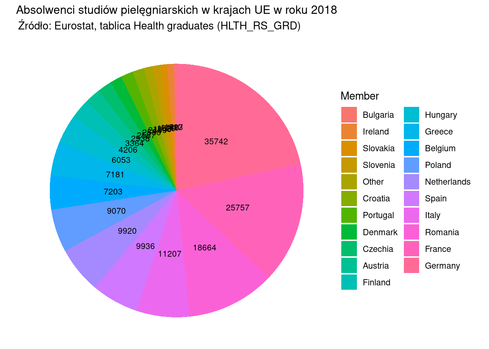

2 Analiza jednej zmiennej
Statystyka opisowa (opis statystyczny) to zbiór metod statystycznych służących do – surprise, surprise – opisu (w sensie przedstawienia sumarycznego) zbioru danych; w zależności od typu danych (przekrojowe, czasowe, przestrzenne) oraz sposobu pomiaru (dane nominalne, porządkowe liczbowe) należy używać różnych metod.
W przypadku danych przekrojowych opis statystyczny nazywany jest analizą struktury i sprowadza się do opisania danych z wykorzystaniem:
tablic (statystycznych)
wykresów
parametrów (takich jak średnia czy mediana)
Rozkład cechy (zmiennej) to przyporządkowanie wartościom cechy zmiennej odpowiedniej liczby wystąpień (liczebności albo częstości (czyli popularnych procentów).
Analiza struktury (dla jednej zmiennej) obejmuje:
określenie tendencji centralnej (miary położenia: wartość przeciętna, mediana, dominanta);
zróżnicowanie wartości (rozproszenie: odchylenie standardowe, rozstęp ćwiartkowy);
asymetrię (rozłożenie wartości zmiennej wokół średniej);
2.1 Tablice statystyczne
Tablica statystyczna to (w podstawowej formie) dwukolumnowa tabela zawierająca wartości cechy oraz odpowiadające tym wartościom liczebności.
Tablica dla cechy niemierzalnej (nominalnej albo porządkowej)
2.1 Absolwenci studiów pielęgniarskich w ośmiu największych krajach UE
Tablica: Absolwenci studiów pielęgniarskich w ośmiu największych krajach UE w roku 2018
| kraj | liczba |
|---|---|
| Belgium | 7203 |
| Germany | 35742 |
| Spain | 9936 |
| France | 25757 |
| Italy | 11207 |
| Netherlands | 9920 |
| Poland | 9070 |
| Romania | 18664 |
Źródło: Eurostat, tablica Health graduates (HLTH_RS_GRD)
W przykładzie jednostką badania jest absolwent studiów pielęgniarskich w roku 2018, badaną cechą zaś kraj w którym ukończył studia (cecha nominalna).
Tablica dla cechy mierzalnej liczbowej skokowej
Cecha skokowa to taka cecha, która może przyjąć skończoną liczbę wartości. Matematycznym odpowiednikiem cechy skokowej jest zbiór liczb całkowitych.
Jeżeli tych wartości jest mało tablica zawiera wyliczenie wartości cechy i odpowiadających im liczebności. Jeżeli liczba wariantów cechy jest duża tablica zawiera klasy wartości (przedziały wartości) oraz odpowiadające im liczebności.
Liczba przedziałów jest dobierana metodą prób i błędów, tak aby:
przedziały wartości powinny być jednakowej rozpiętości.
Na zasadzie wyjątku dopuszcza się aby pierwszy i ostatni przedział były otwarte, tj. nie miały dolnej (pierwszy) lub górnej (ostatni) granicy
nie było przedziałów z zerową liczebnością
przedziałów nie było za dużo ani za mało (typowo 8–15)
większość populacji nie znajdowała się w jednej czy dwóch przedziałach
2.2 Gospodarstwa domowe wg liczby samochodów
Tablica: Gospodarstwa domowe we wsi X wg liczby samochodów w roku 2022
| liczba samochodów | liczba gospodarstw | % |
|---|---|---|
| 0 | 230 | 39.3162393 |
| 1 | 280 | 47.8632479 |
| 2 | 70 | 11.9658120 |
| 3 i więcej | 5 | 0.8547009 |
| razem | 585 | 100.0000000 |
Źródło: obliczenia własne
Tablica dla cechy mierzalnej liczbowej ciągłej
Cecha ciągła to taka cecha, która może przyjąć nieskończoną/nieprzeliczalną liczbę wartości. Matematycznym odpowiednikiem cechy skokowej jest zbiór liczb rzeczywistych.
Tablica zawiera klasy wartości (przedziały wartości) oraz odpowiadające im liczebności.
Liczba przedziałów jest dobierana metodą prób i błędów, tak aby:
przedziały wartości powinny być jednakowej rozpiętości.
Na zasadzie wyjątku dopuszcza się aby pierwszy i ostatni przedział były otwarte, tj. nie miały dolnej (pierwszy) lub górnej (ostatni) granicy
nie było przedziałów z zerową liczebnością
przedziałów nie było za dużo ani za mało (typowo 8–15)
większość populacji nie znajdowała się w jednej czy dwóch przedziałach
zwykle przyjmuje się za końce przedziałów okrągłe liczby bo dziwnie by wyglądało gdyby koniec przedziału np. był równy 1,015 zamiast 1,0.
2.3 Dzietność kobiet na świecie
Współczynnik dzietności (fertility ratio albo FR) – przeciętna liczba urodzonych dzieci przypadających na jedną kobietę w wieku rozrodczym (15–49 lat). Przyjmuje się, iż FR między 2,10–2,15 zapewnia zastępowalność pokoleń.
Dane dotyczące dzietności dla wszystkich krajów świata można znaleźć na stronie https://ourworldindata.org/grapher/fertility-rate-complete-gapminder) Zbudujmy tablicę przedstawiającą rozkład współczynników dzietności w roku 2018
Krajów jest 201. Wartość minimalna to 1.22 a wartość maksymalna to 7.13. Decydujemy się na rozpiętość przedziału równą 0,5; dolny koniec pierwszego przedziału przyjmujemy jako 1,0.
Tablica: Kraje świata według współczynnika dzietności (2018)
| Wsp. dzietności | liczba krajów |
|---|---|
| (1,1.5] | 24 |
| (1.5,2] | 61 |
| (2,2.5] | 40 |
| (2.5,3] | 17 |
| (3,3.5] | 8 |
| (3.5,4] | 15 |
| (4,4.5] | 11 |
| (4.5,5] | 12 |
| (5,5.5] | 6 |
| (5.5,6] | 5 |
| (6,6.5] | 1 |
| (7,7.5] | 1 |
Źródło: https://ourworldindata.org/grapher/fertility-rate-complete-gapminder
Każda tablica statystyczna musi mieć:
Część liczbową (kolumny i wiersze);
- żadna rubryka w części liczbowej nie może być pusta (żelazna zasada); w szczególności brak danych należy explicite zaznaczyć umownym symbolem
Część opisową:
- tytuł tablicy;
- nazwy (opisy zawartości) wierszy;
- nazwy (opisy zawartości) kolumn;
- wskazanie źródła danych;
- ewentualne uwagi odnoszące się do danych liczb.
Pominięcie czegokolwiek z powyższego jest ciężkim błędem. Jeżeli nie ma danych (a często nie ma–z różnych powodów – należy to zaznaczyć a nie pozostawiać pustą rubrykę)
2.2 Wykresy
Wykresy statystyczne są graficzną formą prezentacji materiału statystycznego, są mniej precyzyjne i szczegółowe niż tablice, natomiast bardziej sugestywne.
Celem jest pokazanie rozkładu wartości cechy w populacji: jakie wartości występują często a jakie rzadko, jak bardzo wartości różnią się między sobą. Jak różnią się rozkłady dla różnych, ale logicznie powiązanych populacji (np rozkład czegoś-tam w kraju A i B albo w roku X, Y i Z).
Do powyższego celu celu stosuje się:
wykres słupkowy (skala nominalna/porządkowa)
wykres kołowy (skala nominalna/porządkowa)
histogram (albo wykres słupkowy dla skal nominalnych)
Uwaga: wykres kołowy jest zdecydowanie gorszy od wykresu słupkowego i nie jest zalecany. Każdy wykres kołowy można wykreślić jako słupkowy i w takiej postaci będzie on bardziej zrozumiały i łatwiejszy w interpretacji.
2.2.1 Skala nominalna
Wykres słupkowy (bar chart)
2.4 Absolwenci studiów pielęgniarskich w ośmiu największych krajach UE

Wykres kołowy (pie chart)
2.5 Absolwenci studiów pielęgniarskich w ośmiu największych krajach UE

Wykres słupkowy i kołowy przedstawiają dokładnie to samo.
Wykres kołowy wygląda zapewne efektowniej (z uwagi na paletę kolorów) ale jest mniej efektywny. Wymaga legendy w szczególności, która utrudnia interpretację treści (nieustannie trzeba porównywać koło z legendą żeby ustalić który kolor to który kraj.)
Jeżeli zwiększymy liczbę krajów wykres kołowy staje się zupełnie nieczytelny (brakuje rozróżnialnych kolorów a wycinki koła są zbyt wąskie żeby cokolwiek wyróżniały):
2.6 Absolwenci studiów pielęgniarskich w krajach UE

Wykres słupkowy dalej jest natomiast OK:

2.2.2 Skala liczbowa
Histogram to coś w rodzaju wykresu słupkowego tylko na jednej osi zamiast wariantów cechy są przedziały wartości.
2.7 Dzietność kobiet na świecie

Podobnie jak tablice, rysunki powinny być opatrzone tytułem oraz zawierać źródło wskazujące na pochodzenie danych (zobacz przedstawione przykłady.)
2.3 Florence Nightingale
Nie każdy kto wie kim była Florence Nightingale, wie że była ona także statystykiem. W czasie wojny krymskiej nie tylko zorganizowała opiekę nad rannymi żołnierzami, ale również – aby przekonać swoich przełożonych do zwiększenia nakładów na szpitale polowe – prowadziła staranną ewidencję szpitalną oraz zgromadzone dane potrafiła analizować, używając wykresów własnego projektu.
W szczególności słynny jest diagram Nightingale zwane także różą Nightingale (rys. 2.1), które wprawdzie (podobno) nie okazały się szczególnie użyteczny, no ale nie każdy nowy pomysł jest od razu genialny:

Rysunek 2.1: Róża Nightingale
Jest to coś w rodzaju wykresu słupkowego tyle że zamiast słupków są wycinki koła. Wycinków jest dwanaście tyle ile miesięcy. Długość promienia a co za tym idzie wielkość pola wycinka zależy od wielkości zjawiska, który reprezentuje (przyczyna śmierci: rany/choroby/inne)
Wpisując Florence+Nightingale można znaleźć dużo informacji na temat, w tym: http://www.matematyka.wroc.pl/ciekawieomatematyce/pielegniarka-statystyczna
W 1859 roku Nightingale została wybrana jako pierwsza kobieta na członka Royal Statistical Society (Królewskie Stowarzyszenie Statystyczne) oraz została honorowym członkiem American Statistical Association (Amerykańskiego Stowarzyszenia Statystycznego).
Więc szanowi czytelnicy wnioski są oczywiste :-)
2.4 Analiza parametryczna
Analiza parametryczna z oczywistych względów dotyczy tylko zmiennych mierzonych na skali liczbowej.
2.4.1 Miary położenia
Miary przeciętne (położenia) charakteryzują średni lub typowy poziom wartości cechy. Są to więc takie wartości, wokół których skupiają się wszystkie pozostałe wartości analizowanej cechy.

Rysunek 2.2: Rozkłady cechy a miary średnie
Na rysunku 2.2 po lewej mamy dwa rozkłady różniące się poziomem przeciętnym. Rozkład czerwony ma przeciętnie większe wartości niż turkusowy. Są to rozkłady jednomodalne, czyli takie, w których rozkład cechy skupia się wokół jednej wartości. Dla takich rozkładów ma sens obliczanie średniej arytmetycznej. Te średnie wartości są zaznaczone na rysunku linią pionową.
Na rysunku po prawej mamy rozkłady nietypowe: wielomodalne (czerwony) lub niesymetryczne (niebieski). W rozkładzie niesymetrycznym wartości skupiają się nie centralnie, ale po prawej/lewej od środka przedziału zmienności/wartości średniej).
W świecie rzeczywistym zdecydowana większość rozkładów jest jednomodalna. Rzadkie przypadki rozkładów wielomodalnych zwykle wynikają z łącznego analizowania dwóch różniących się wartością średnią zbiorów danych. Oczywistym zaleceniem w takiej sytuacji jest analiza każdego zbioru oddzielnie.
Rodzaje miar położenia
- klasyczne
- średnia arytmetyczna
- pozycyjne
- mediana
- dominanta
- kwartyle
- ewentualnie kwantyle, decyle, centyle (rzadziej używane)
Średnia arytmetyczna (Mean, Arithmetic mean) to łączna suma wartości podzielona przez liczbę sumowanych jednostek. Jeżeli wartość jednostki \(i\) w \(N\)-elementowym zbiorze oznaczymy jako \(x_i\) (gdzie: \(i=1,\ldots,N\)) to średnią można zapisać jako \(\bar x = (x_1 + \cdots + x_N)/N\)
Uwaga: we wzorach statystycznych zmienne zwykle oznacza się małymi literami a średnią dla zmiennej przez umieszczenie nad nią kreski poziomej czyli \(\bar x\) to średnia wartość zmiennej \(x\).
Mediana (Median, kwartyl drugi) dzieli uporządkowaną zbiorowość na dwie równe części; połowa jednostek ma wartości cechy mniejsze lub równe medianie, a połowa wartości cechy równe lub większe od mediany. Stąd też mediana bywa nazywana wartością środkową.
Własności mediany: odporna na wartości nietypowe (w przeciwieństwie do średniej)
Kwartyle: coś jak mediana tylko bardziej szczegółowo. Kwartyli jest trzy i dzielą one zbiorowość na 4 równe części, każda zawierająca 25% całości.
Pierwszy kwartyl dzieli uporządkowaną zbiorowość w proporcji 25%–75%. Trzeci dzieli uporządkowaną zbiorowość w proporcji 75%–25%. Drugi kwartyl to mediana.
Kwantyle (D, wartości dziesiętne), podobnie jak kwartyle, tyle że dzielą na 10 części.
Centyle (P, wartości setne), podobnie jak kwantyle tyle że dzielą na 100 części. Przykładowo wartość 99 centyla i mniejszą ma 99% jednostek w populacji.
2.8 Współczynnik dzietności na świecie w roku 2018
Średnia: 2.68. Interpretacja: średnia wartość współczynnika dzietności wyniosła 2.68 dziecka. Mediana: 2.2. Interpretacja mediany: współczynnik dzietności w połowie krajów na świecie wynosiła 2.2 dziecka i mniej.
Uwaga: średnia dzietność na świecie nie wynosi 2.68 dziecka (bo po pierwsze uśredniamy kraje a nie kobiety a po drugie kraje różnią się liczbą ludności). Podobnie dzietność połowy kobiet na świecie wyniosła 2.2 dziecka i mniej jest niepoprawną interpretacją mediany (z tych samych względów jak w przypadku średniej.)
Generalna uwaga: interpretacja średniej-średnich często jest nieoczywista i należy uważać. (a współczynnik dzietności jest średnią: średnia liczba dzieci urodzonych przez kobietę w wieku rozrodczym. Jeżeli liczymy średnią dla 202 krajów, to mamy średnią-średnich). Inny przykład: odsetek ludności w wieku poprodukcyjnym wg powiatów (średnia z czegoś takiego nie da nam odsetka ludności w wieku poprodukcyjnym w Polsce, bo powiaty różnią się liczbą ludności.)
2.9 Współczynnik dzietności (kontynuuacja):
Pierwszy kwartyl: 1.75; trzeci kwartyl 3.56 co oznacza że 25% krajów miało wartość współczynnika dzietności nie większą niż 1.75 dziecka a 75% krajów miało wartość współczynnika dzietności nie większą niż 3.56 dziecka.
2.4.2 Miary zmienności
Miary zmienności określają zmienność (dyspersję albo rozproszenie) w zbiorowości
Rodzaje miar zmienności:
- Klasyczne
- Wariancja i odchylenie standardowe
- Pozycyjne
- rozstęp
- rozstęp ćwiartkowy
Wariancja (variance) jest to średnia arytmetyczna kwadratów odchyleń poszczególnych wartości cechy od średniej arytmetycznej zbiorowości. Co można zapisać
\[s^2 = \frac{1}{N} \left( (x_1 - \bar x)^2 + (x_2 - \bar x)^2 + \cdots + (x_N - \bar x)^N \right)\]
Przy czym często zamiast dzielenie przez \(N\) dzielimy przez \(N-1\).
Odchylenie standardowe (standard deviation, sd) jest pierwiastkiem kwadratowym z wariancji. Parametr ten określa przeciętną różnicą wartości cechy od średniej arytmetycznej.
Rozstęp ćwiartkowy (interquartile range, IQR) ma banalnie prostą definicję:
\[ R_Q = Q_3 - Q_1 \] gdzie: \(Q_1\), \(Q_3\) oznaczają odpowiednio pierwszy oraz trzeci kwartyl.
2.10 Współczynnik dzietności (kontynuacja)
Średnie odchylenie od średniej wartości współczynnika wynosi 1.26 dziecka. Wartość rozstępu ćwiartkowego wynosi 1.81 dziecka.
Uwaga: odchylenie standardowe/ćwiartkowe są miarami mianowanymi. Zawsze należy podać jednostkę miary.
2.4.3 Miary asymetrii
Asymetria (skewness), to odwrotność symetrii. Szereg jest symetryczny jeżeli jednostki są rozłożone „równomiernie” wokół wartości średniej. W szeregu symetrycznym wartości średniej i mediany są sobie równe. Skośność może być dodatnia (positive skew) lub ujemna (negative skew). Czym się różni jedna od drugiej widać na rysunku 2.3.

Rysunek 2.3: Rozkłady symetryczne i asymetryczne
Miary asymetrii:
klasyczny współczynnik asymetrii (\(g\))
- przyjmuje wartości ujemne dla asymetrii lewostronnej; a dodatnie dla prawostronnej. Teoretycznie może przyjąć dowolnie dużą wartość ale w praktyce rzadko przekracza 3 do do wartości bezwzględnej.
- wartości większe od 2 świadczą o dużej a większe od 3 o bardzo dużej asymetrii
współczynniki asymetrii Pearsona (\(W_s\))
- wykorzystuje różnice między średnia Medianą: \(W_s = (\bar x - Me)/s\)
Współczynnik asymetrii (skośności) oparty na odległościach między kwartylami lub decylami:
- Obliczany jest według następującej formuły: \(W_{sq} = \frac{(Q_3 - Q_2) - (Q_2 - Q_1)}{Q_3 - Q_1}\)
2.5 Porównanie wielu rozkładów
Często strukturę jednego rozkładu należy porównać z innym. Albo trzeba porównać strukturę wielu rozkładów. Pokażemy jak to zrobić na przykładzie.
2.11 Masa ciała uczestników Pucharu Świata w Rugby
W turniejach o puchar świata w Rugby w latach 2015, 2019 i 2023 uczestniczyło łącznie 1879 zawodników. W grze w rugby drużyna jest podzielona na dwie formacje: ataku i młyna. Należy scharakteryzować rozkład masy ciała zawodników obu formacji.
Zawodnicy ataku
Przeciętnie zawodnik ataku ważył 92.7 kg; mediana 92.0 kg (połowa zawodników ataku ważyła 92.0 kg i mniej); pierwszy/trzeci kwartyl 85.5/99 kg (1/4 zawodników ataku ważyła 85.5 kg i mniej; 1/4 zawodników ataku ważyła 99 kg i więcej;
Odchylenie standardowe 10.1 kg (przeciętnie odchylenie od średniej arytmetycznej wynosi 10.1 kg); rozstęp ćwiartkowy wynosi 13.5 kg (rozstęp 50% środkowych wartości wynosi 13.5 kg)
Histogram przy przyjęciu długości przedziału równej 4kg (linia zielona oznacza poziom średniej):
Zawodnicy młyna
Średnio zawodnik młyna ważył 112.3 kg; mediana 112.0 kg (połowa zawodników młyna ważyło 112 kg i mniej); pierwszy/trzeci kwartyl 106/118 kg (1/4 zawodników młyna ważyło 106 kg i mniej; 1/4 zawodników młyna ważyło 118 kg i więcej;
Odchylenie standardowe 9.2 kg (przeciętnie odchylenie od średniej arytmetycznej wynosi 9.2 kg); rozstęp ćwiartkowy wynosi 12 kg (rozstęp 50% środkowych wartości wynosi 12 kg)
Histogram przy przyjęciu długości przedziału równej 4kg (linia zielona oznacza poziom średniej):

Porównanie atak vs młyn
| Miara | Atak | Młyn |
|---|---|---|
| średnia | 92.7087379 | 112.327957 |
| mediana | 92 | 112 |
| odchyl.st | 10.0723816 | 9.2406513 |
| iqr | 13.5 | 12 |
średnio zawodnik młyna ważył prawie 20 kg więcej od zawodnika ataku (w przypadku mediany jest to dokładnie 20 kg więcej). Zmienność mierzona wielkością odchylenia standardowego oraz IQR jest w obu grupach podobna.

2.5.1 Wykres pudełkowy
Do porównania wielu rozkładów szczególnie użyteczny jest wykres zwany pudełkowym (box-plot).
Konstrukcja pudełka na wykresie (por rys. @(fig:boxplot)):
- górny dolny bok pudełka jest równy kwartylom;
- linia pionowa w środku pudełka jest równa medianie;
- linie poziome (zwane wąsami) mają długość równą \(Q_1 - 1,5 \textrm{IQR}\) oraz \(Q_3 + \textrm{IQR}\) (dla przypomnienia: \(Q_1\), \(Q_3\) to kwartyle, zaś \(\textrm{IQR}\) to rozstęp ćwiartkowy);
- kropki nad/pod wąsami to wartości zmiennej większe od \(Q_3 + 1,5 \textrm{IQR}\) lub mniejsze od \(Q_1 - 1,5 \textrm{IQR}\).
Interpretacja pudełka:
- linia pozioma w środku pudełka określa przeciętny poziom zjawiska;
- wysokość pudełka oraz wąsów określa zmienność (im większe wąsy/wysokość tym większa zmienność);
- kropki nad/pod wąsami to obserwacje nietypowe.

Rysunek 2.4: Wykres pudełkowy
Zwróć uwagę na sztuczkę: wartości nietypowe nie są definiowane jako na przykład górne/dolne 1% wszystkich wartości (bo wtedy każdy rozkład miałby wartości nietypowe), ale jako wartości mniejsze/większe od \(Q_* \pm 1,5 \times \mathrm{IQR}\). Wszystkie wartości rozkładów o umiarkowanej zmienności mieszczą się wewnątrz czegoś takiego.
Typowo wykres zawiera wiele pudełek a każde pudełko wizualizuje jeden rozkład. Pudełka mogą być umieszczone jedno pod drugim, tak jak na rysunku @(fig:boxplot) lub jedno obok drugiego jak na przykładach poniżej.
2.12 Masa ciała rugbystów
Z wykresu od razu widać, który rozkład ma wyższą średnią, który większe rozproszenie oraz w którym występują wartości nietypowe.
Pudełek może być więcej niż dwa oczywiście. Następny przykład pokazuje porównanie rozkładów masy ciała zawodników rugby na poszczególnych turniejach.
2.13 Masa ciała rugbystów
Od razu widać, że przeciętnie najcięższy zawodnicy byli na turnieju w roku 2019; największe zróżnicowanie masy ciała występowało na turnieju w roku 2023.
2.6 Zestawienie metod opisu statystycznego
W rozdziale przedstawiono osiem sposobów opisania rozkładu zmiennej:
Tablice statystyczne
Wykres słupkowy
Wykres kołowy (niezalecany)
Histogram
Wykres pudełkowy
Miary tendencji centralnej: średnia, mediana, kwartyle
Miary rozproszenia: odchylenie standardowe, rozstęp ćwiartkowy
Miary asymetrii